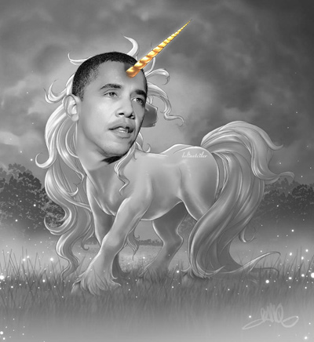
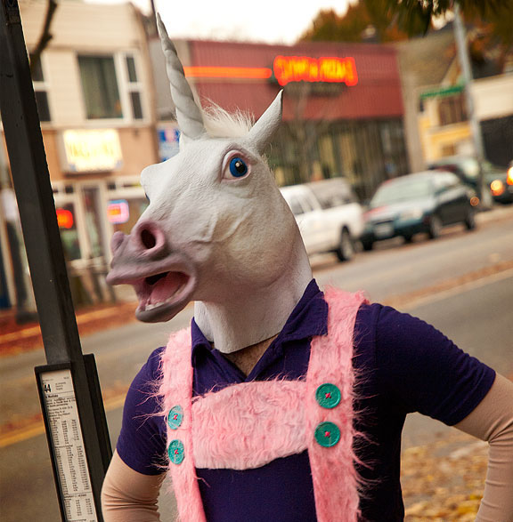

"Unicorns are hard to catch. Back in the 1500s, it was believed that only fair young maidens could gain the trust of these elusive, horned creatures."
The top 'Unicorn Employees' in our company:

Zac Spence:
One day the last unicorn on earth is missing her lost companions and sets off on a quest to King Haggard’s castle, the dark fortress, where many moons ago the Red Bull, a giant bull-shaped fire creature, has driven the unicorns. On her dangerous journey.
Casey Dailey:
The same night the Red Bull scents the last unicorn in a dead forest near the fortress and hunts her down. In the last second Schmendrick lets go of his own personal, limited power. calls on the source of magic itself and turns the unicorn into a beautiful robot.
Bri Wyatt:
After magical encounters with a talking cat, with gargoyles and a drunk skull they finally discover the secret of the unicorns. Haggard has captured them all with the help of the Red Bull, who guards them in the sea where Haggard watches them during soccer practice.
Miriam Rozenbaum:
Sunrise – giant, glittering waves - thousands of unicorns arise in mighty waves from the ocean, forming themselves into shapes out of the sea spray. The unicorns are back on earth and run free again... Haggard’s dark fortress collapses with himself and all the haters.